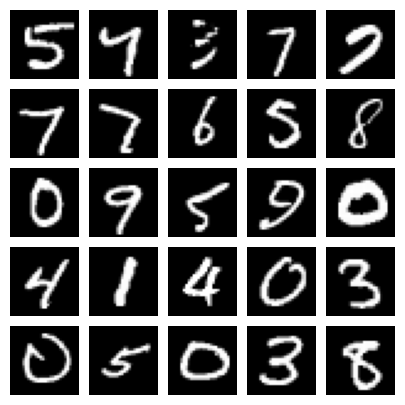
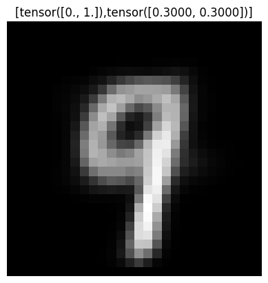
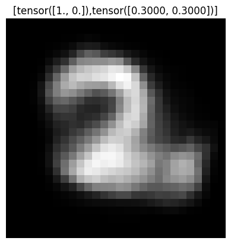
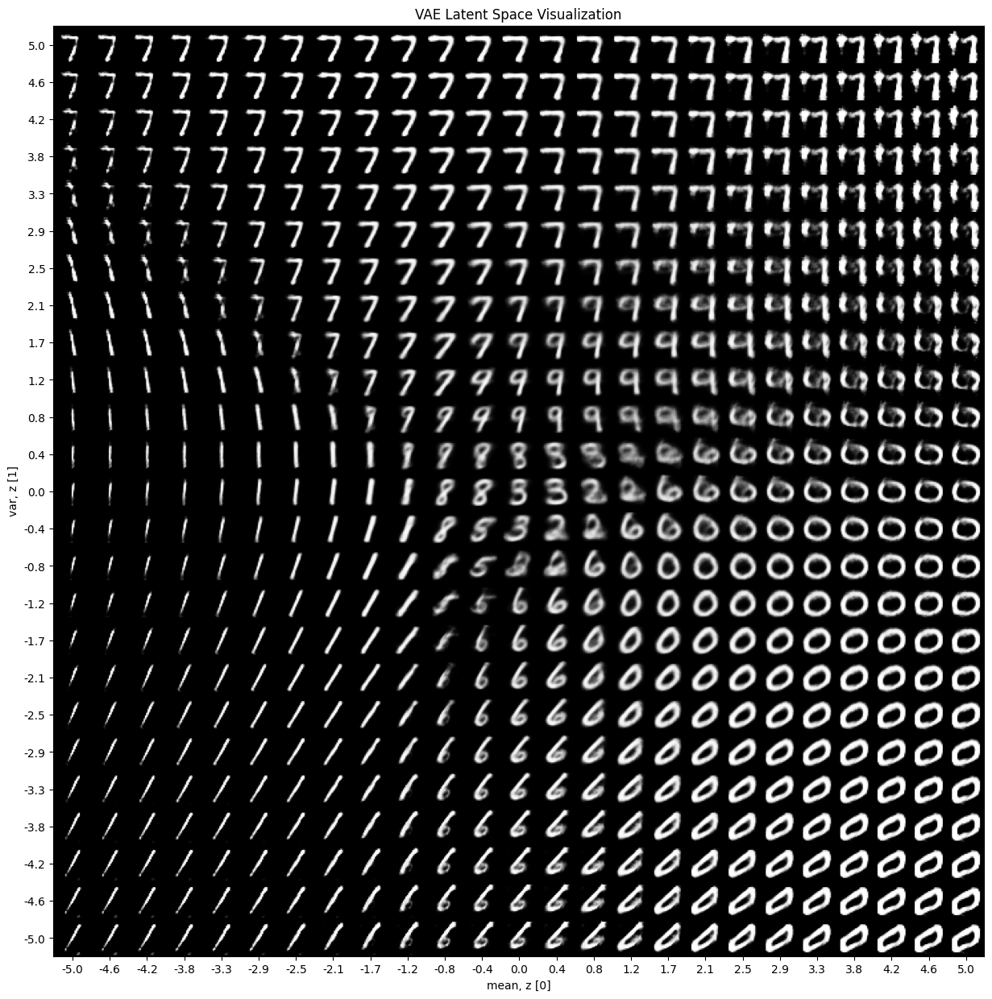

import osvae
A simple VAE implementation in PyTorch heavily inspired by Variational Autoencoder (VAE) — PyTorch Tutorial and its accompanying collab notebook.
import lightning as pl
import matplotlib.pyplot as plt
from mpl_toolkits.axes_grid1 import ImageGrid
import numpy as np
import torch
import torch.nn as nn
import torchvision.transforms as transforms
from torchvision.datasets import MNIST# Download datasets
ds_path = os.path.abspath("datasets")
os.makedirs(ds_path, exist_ok=True)class MNISTDataModule(pl.LightningDataModule):
def __init__(self, ds_path: str, batch_size=32, random_seed=42):
super().__init__()
self.ds_path = ds_path
self.batch_size = batch_size
self.random_seed = random_seed
def prepare_data(self):
# Download datasets
transform = transforms.Compose([transforms.ToTensor()])
self.orig_train_dataset = MNIST(self.ds_path, transform=transform, download=True, train=True)
self.test_dataset = MNIST(self.ds_path, transform=transform, download=True, train=False)
def setup(self, stage=None):
# Assign train/val datasets for use in dataloaders
total_size = len(self.orig_train_dataset)
train_size = int(0.9 * total_size)
val_size = total_size - train_size
gen = torch.Generator()
gen.manual_seed(self.random_seed)
if stage == 'fit' or stage is None:
self.train_dataset, self.val_dataset = torch.utils.data.random_split(self.orig_train_dataset, [train_size, val_size], generator=gen)
def train_dataloader(self):
return torch.utils.data.DataLoader(self.train_dataset, batch_size=self.batch_size, shuffle=True)
def val_dataloader(self):
return torch.utils.data.DataLoader(self.test_dataset, batch_size=self.batch_size)
def test_dataloader(self):
return torch.utils.data.DataLoader(self.test_dataset, batch_size=self.batch_size)device = torch.device("cuda" if torch.cuda.is_available() else "cpu")
print(f"Using device: {device}")Using device: cpudm = MNISTDataModule(ds_path, batch_size=32)
dm.prepare_data()
dm.setup()train_loader = dm.train_dataloader()
batch = next(iter(train_loader))batch[0].shape, batch[1].shape(torch.Size([32, 1, 28, 28]), torch.Size([32]))num_samples = 25
batch_images = batch[0]
sample_images = batch_images[:num_samples, 0]
fig = plt.figure(figsize=(5, 5))
grid = ImageGrid(fig, 111, nrows_ncols=(5, 5), axes_pad=0.1)
for ax, im in zip(grid, sample_images):
ax.imshow(im, cmap='gray')
ax.axis('off')
plt.show()
class VAE(nn.Module):
def __init__(self, input_dim=784, hidden_dim=400, latent_dim=200):
super(VAE, self).__init__()
# encoder
self.encoder = nn.Sequential(
nn.Linear(input_dim, hidden_dim),
nn.LeakyReLU(0.2),
nn.Linear(hidden_dim, latent_dim),
nn.LeakyReLU(0.2)
)
# latent mean and variance
self.mean_layer = nn.Linear(latent_dim, 2)
self.logvar_layer = nn.Linear(latent_dim, 2)
# decoder
self.decoder = nn.Sequential(
nn.Linear(2, latent_dim),
nn.LeakyReLU(0.2),
nn.Linear(latent_dim, hidden_dim),
nn.LeakyReLU(0.2),
nn.Linear(hidden_dim, input_dim),
nn.Sigmoid()
)
def encode(self, x):
x = self.encoder(x)
mean, logvar = self.mean_layer(x), self.logvar_layer(x)
return mean, logvar
def reparameterization(self, mean, var):
epsilon = torch.randn_like(var).to(mean)
z = mean + var*epsilon
return z
def decode(self, x):
return self.decoder(x)
def forward(self, x):
mean, log_var = self.encode(x)
z = self.reparameterization(mean, torch.exp(0.5 * log_var))
x_hat = self.decode(z)
return x_hat, mean, log_varclass VAEModule(pl.LightningModule):
def __init__(self, model: VAE, lr: float = 1e-3):
super().__init__()
self.model = model
self.lr = lr
self.loss = nn.BCELoss(reduction='sum')
def forward(self, x):
return self.model(x)
def shared_step(self, batch):
x, _ = batch
x = x.view(x.size(0), -1)
x_hat, mean, log_var = self(x)
recon_loss = self.loss(x_hat, x)
kl_div = -0.5 * torch.sum(1 + log_var - mean.pow(2) - log_var.exp())
loss = recon_loss + kl_div
return loss
def training_step(self, batch, batch_idx):
loss = self.shared_step(batch)
self.log('train_loss', loss)
return loss
def validation_step(self, batch, batch_idx):
loss = self.shared_step(batch)
self.log('val_loss', loss)
return loss
def test_step(self, batch, batch_idx):
loss = self.shared_step(batch)
self.log('test_loss', loss)
return loss
def configure_optimizers(self):
optimizer = torch.optim.Adam(self.parameters(), lr=self.lr)
return optimizer# Train model
model = VAE()
vae = VAEModule(model)
trainer = pl.Trainer(max_epochs=10)
trainer.fit(vae, dm)GPU available: True (mps), used: True
TPU available: False, using: 0 TPU cores
IPU available: False, using: 0 IPUs
HPU available: False, using: 0 HPUs
| Name | Type | Params
----------------------------------
0 | model | VAE | 790 K
1 | loss | BCELoss | 0
----------------------------------
790 K Trainable params
0 Non-trainable params
790 K Total params
3.162 Total estimated model params size (MB)
/Users/spather/code/ai-learning/venv/lib/python3.11/site-packages/lightning/pytorch/trainer/connectors/data_connector.py:441: The 'val_dataloader' does not have many workers which may be a bottleneck. Consider increasing the value of the `num_workers` argument` to `num_workers=15` in the `DataLoader` to improve performance.
/Users/spather/code/ai-learning/venv/lib/python3.11/site-packages/lightning/pytorch/trainer/connectors/data_connector.py:441: The 'train_dataloader' does not have many workers which may be a bottleneck. Consider increasing the value of the `num_workers` argument` to `num_workers=15` in the `DataLoader` to improve performance.
`Trainer.fit` stopped: `max_epochs=10` reached.def generate_digit(mean, var):
z_sample = vae.model.reparameterization(mean, var).unsqueeze(0).to(vae.device)
x_decoded = vae.model.decode(z_sample)
digit = x_decoded.detach().cpu().reshape(28, 28) # reshape vector to 2d array
plt.title(f'[{mean},{var}]')
plt.imshow(digit, cmap='gray')
plt.axis('off')
plt.show()torch.manual_seed(42)
generate_digit(torch.tensor([0.0, 1.0]), torch.tensor([0.3, 0.3])),
generate_digit(torch.tensor([1.0, 0.0]), torch.tensor([0.3, 0.3]))

def plot_latent_space(model, device: str, scale=5.0, n=25, digit_size=28, figsize=15):
# display a n*n 2D manifold of digits
figure = np.zeros((digit_size * n, digit_size * n))
# construct a grid
grid_x = np.linspace(-scale, scale, n)
grid_y = np.linspace(-scale, scale, n)[::-1]
for i, yi in enumerate(grid_y):
for j, xi in enumerate(grid_x):
z_sample = torch.tensor([[xi, yi]], dtype=torch.float).to(device)
x_decoded = model.decode(z_sample)
digit = x_decoded[0].detach().cpu().reshape(digit_size, digit_size)
figure[i * digit_size : (i + 1) * digit_size, j * digit_size : (j + 1) * digit_size,] = digit
plt.figure(figsize=(figsize, figsize))
plt.title('VAE Latent Space Visualization')
start_range = digit_size // 2
end_range = n * digit_size + start_range
pixel_range = np.arange(start_range, end_range, digit_size)
sample_range_x = np.round(grid_x, 1)
sample_range_y = np.round(grid_y, 1)
plt.xticks(pixel_range, sample_range_x)
plt.yticks(pixel_range, sample_range_y)
plt.xlabel("mean, z [0]")
plt.ylabel("var, z [1]")
plt.imshow(figure, cmap="Greys_r")
plt.show()plot_latent_space(vae.model, vae.device, scale=5.0, n=25, digit_size=28, figsize=15)